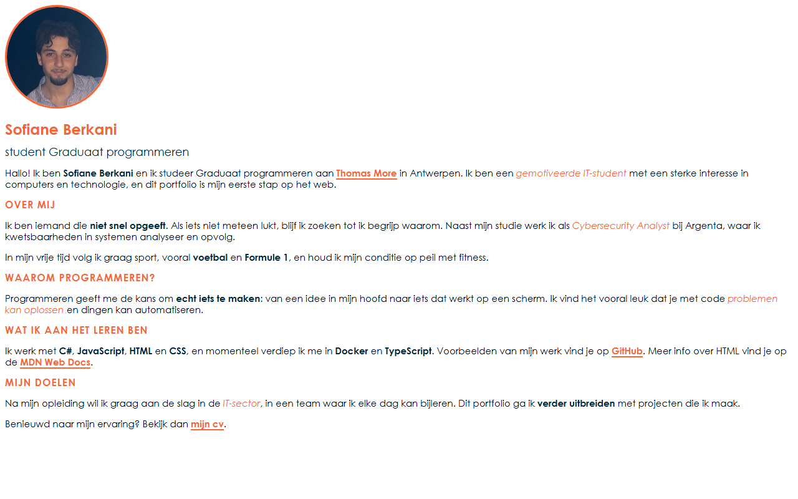

Deze portfoliosite
Mijn portfolio voor het vak User Interfaces aan Thomas More, gemaakt met HTML en CSS.
- Vak: User Interfaces
- Periode: 2026
- Technologie: HTML en CSS
Over het project
Deze site stelt mij voor aan werkgevers en stagebegeleiders. Ik heb eerst een moodboard gemaakt, daarna wireframes en een prototype, en pas dan de code geschreven.
Evolutie van het project
- Versie 1: een homepagina en een cv-pagina, zonder menu.
- Moodboard: kleuren oranje en donkerblauw, lettertype Century Gothic.
- Wireframes en prototype: de indeling van elke pagina uitgetekend.
- Eindversie: vast menu, projectpagina's, contactformulier en één gedeelde stylesheet.
- UX-test: de site getest met de UX-scorecard.
Screenshots
